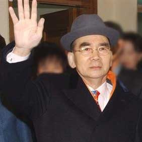
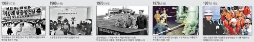
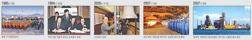
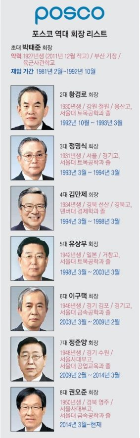

매체 서울신문보도일 2015-03-05
포스코의 47년 역사를 논할 때 고 박태준 포스코 명예회장을 빼놓고는 이야기 자체가 불가능하다. 최고 경영자로 일한 25년간 그는 불가능할 것만 같던 철강 보국의 꿈을 현실로 만들었다. 박 회장이 철강왕이라 불리는 건 글로벌 철강업체로 우뚝선 포스코를 일궈낸 그의 업적을 감안할 때 결코 무색하지 않다. 미국의 카네기는 당대 35년 동안 조강(가공되지 않은 강철) 1000만t을 이뤘지만 박 회장은 25년(1968~1992년) 내 연산 조강 2100만t이라는 신화를 일궈냈다. 기술도 자본도 없는 아시아 변방의 후진국에서 만들어진 신화라는 점에서 더욱 높이 평가된다. 물론 포스코가 지금의 경쟁력을 확보하기까지는 1960~80년대까지 절대권력을 행사했던 박정희 전 대통령의 전폭적인 지지가 있었다는 점을 무시할 수 없다.

▲ 고 박태준 포스코 명예회장
연합뉴스



그의 존재감은 1978년 중국의 최고 실력자 덩샤오핑의 일본 방문 일화에서도 잘 드러난다. 당시 일본 기미쓰제철소를 방문한 덩샤오핑은 이나야마 요시히로 신일본제철 회장에게 “중국에도 포항제철과 같은 제철소를 지어 달라”고 요청했다가 거절당했다. 당시 이나야마 회장의 대답은 간단 명료했다. “중국에는 박태준이 없지 않으냐” 이 대화는 한동안 중국 대륙에서도 ‘박태준 신드롬’이 나타나는 배경이 됐다.
1927년 부산 기장에서 태어난 박태준은 일자리를 찾아 현해탄을 넘은 부친을 따라 학창 시절을 일본에서 보냈다. 1940년 이야마북중에 다니던 그는 2차 세계대전 기간에 제철 근로봉사에 동원됐다. 용광로와의 첫 만남이었다. 1945년 일본 와세다대에 합격했지만 2년만 다니고 귀국해 남조선경비사관학교(현 육군사관학교 6기)에 입학했다. 박 전 대통령을 만난 것도 이때다. 당시 사관학교 중대장이던 박정희는 수학 실력이 탁월한 박태준을 눈여겨봤다. 박태준이 임관한 후 한동안 두 사람은 교류가 없었다. 하지만 부산 군수기지사령관으로 발령받은 박정희가 박태준을 참모장으로 발탁하면서 인연은 다시 시작됐다.
10살 터울인 부하 장교 박태준에 대한 박정희의 신임은 절대적이었다. 5·16군사혁명을 준비하던 박정희는 어느 날 박태준을 따로 불러 부탁한다. “임자는 이 일(쿠데타)에 참여하지 말고 만약 일이 잘못되면 내 식구들이나 좀 돌봐줘.” 결국 1961년 5·16 군사 쿠데타로 권력을 잡은 박정희는 스스로 2대 국가재건최고회의 의장에 오르면서 비서실장에 박태준을 임명했다. 2년 후 대부분 정치에 입문한 혁명세력과 달리 박태준은 소장으로 예편했다. 박 전 대통령은 박태준에게 텅스텐 수출업체인 대한중석 사장을 맡겼고 이어 제철사업도 지시했다.
한국이 제철사업을 하겠다고 나서자 우방인 미국은 물론 일본까지 비웃었다. 군사정권의 과시용 사업일 뿐이라는 냉소만 돌아왔다. 그럴 법도 했다. 당시 한국의 1인당 국민소득은 100달러 이하, 국가의 총수출액은 4200만 달러에 불과했다. 하지만 종합제철소는 건설에 드는 돈만 무려 1억 5000만 달러에 달했다.
1968년 4월 포스코의 전신 포항제철은 그렇게 시작됐다. 가장 큰 걸림돌인 자금은 해외 차관에 의지하기로 했다. 하지만 미국 등 5개국 8개사로 구성된 대한국제제철차관단(KISA)과 세계은행(IBRD), 미국국제개발처(USAID), 대한국제경제협의체(IECOK) 등은 결국 고개를 가로저었다. 미국을 방문해 KISA 대표에게 최종적으로 ‘협력 불가’라는 답을 듣고 돌아오는 길에 박태준 사장은 하와이에서 대일청구권 자금의 일부를 제철소 건설 자금으로 전용하는 이른바 ‘하와이 구상’을 하게 된다. 당시 8000만 달러 정도 남아 있던 대일청구권 자금을 제철사업에 투자해 보자는 아이디어다. 곧바로 박 전 대통령의 재가를 받은 박 사장은 곧장 일본으로 가 일본 정재계 주요 인사들 설득에 나섰다. 미쓰비시상사의 후지노 사장 등 철강업계 관계자는 물론 통산성의 오히라 마사요시 장관 등을 연이어 만나 한국에 철강산업이 필요한 이유를 말하며 설득했다. 오히라 장관은 김종필과 함께 한·일청구권 협상을 타결 지은 인물이다. 나카소네 야스히로 전 일본 총리는 자신의 회고록에서 당시 박 사장의 모습을 이렇게 기록했다. “박 선생은 보는 이들이 오히려 안타까워할 정도로 열심히 뛰어다녔다. 그의 진지한 노력에 일본은 감동했다”
박 사장은 결국 대일청구권 자금 7370만 달러와 일본 은행 차관 5000만 달러를 합한 1억 2370만 달러로 제철소사업을 시작했다. 1969년 8월 제3차 한·일 각료회담에서 일본 정부도 한국의 종합제철 건설 사업을 지원키로 약속했다. 자금이 확보되자 공사가 본격적으로 시작됐다. 일제 식민 지배에 대한 피해 배상 청구권을 사실상 포기하는 대일청구권 자금은 우리 민족에겐 피 같은 돈이었다. 회담을 성사시킨 박정희 정권은 ‘3억 달러에 민족의 자존심을 팔았다’는 비난과 반발을 감수해야 했다. 그런 사실을 박 사장도 누구보다 잘 알고 있었다. 공사를 독려하면서 박 사장은 “이 제철소는 식민 지배에 대한 보상금으로 받은 조상의 혈세로 짓는 것이니 만일 실패하면 바로 우향우해서 영일만 바다에 빠져 죽는다는 각오로 일해야 한다”고 강조했다.
박 전 대통령은 전폭적으로 지원했다. 3년여에 걸친 공사 기간 중에 13번이나 포항 현장을 방문했다. 박 사장에게 건넨 ‘종이 마패’는 또 하나의 유명한 일화다. 공사 과정에서 당시 정치인들이 박 사장을 흔들어대자 박 전 대통령은 종이 마패 한장을 박 사장에게 쥐여 줬다. 마패에는 ‘박태준을 건드리면 누구든지 가만 안 둔다’고 적혀 있었다.
포항제철은 가동된 지 1년 만에 매출액 1억 달러를 기록하며 빚을 다 갚고 흑자를 기록했다. 결국 1970년 4월 1일, 온 국민의 기대 속에 연산 130만t 규모의 철을 생산하는 포항 1기 설비를 착공했다. 1973년 6월 마침내 우리나라 최초의 용광로는 쇳물을 뿜어내기 시작했다. 이후 건설과 조업을 병행하며 포철은 성장 가도를 달렸다. 세계 최대 제철소라는 타이틀은 포항제철소에서 광양제철소로 이어지며 1992년 2100만t의 사반세기 대역사를 마무리하게 된다.
박태준 명예회장은 설비 가동 첫해인 1973년 매출액 416억원에 46억원 흑자를 기록한 이래 1992년 경영 일선에서 물러날 때까지 매출액을 149배(6조 1821억원), 순이익을 40배(1852억원) 이상으로 늘렸다. 용광로가 가동하기 시작한 이후 현재까지 단 한번의 적자 없이 흑자 행진을 지속하는 기틀이 됐다. 한국 제철사업에 투자하는 것을 강력히 거부했던 존 자페 전 IBRD 한국 담당자는 훗날 이렇게 말했다. “나는 지금도 대한국제제철차관단에 투자 반대 의견을 제출했던 내 보고서가 옳다고 믿는다. 다만 박태준 회장이 상식을 초월하는 일을 해 나의 보고서를 틀리게 만들었을 뿐이다. 포스코의 성공은 지도자의 끈질긴 노력을 바탕으로 설비 구매의 효율성, 낮은 생산 원가, 인력 개발, 건설 기간 단축을 실현한 결과라고 생각한다”
유영규 기자 whoami@seoul.co.kr